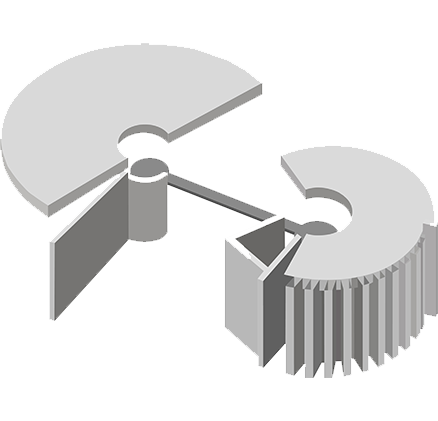
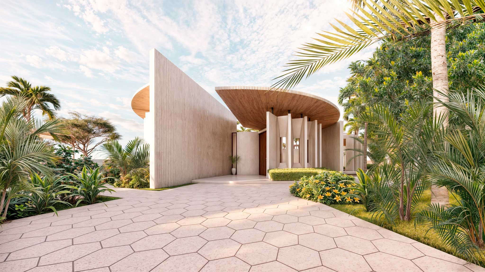
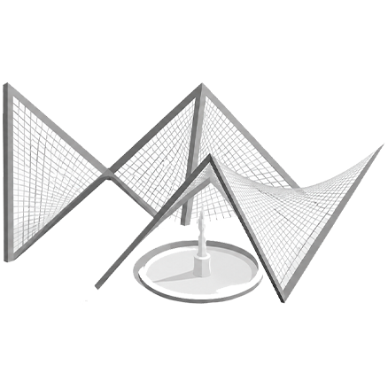
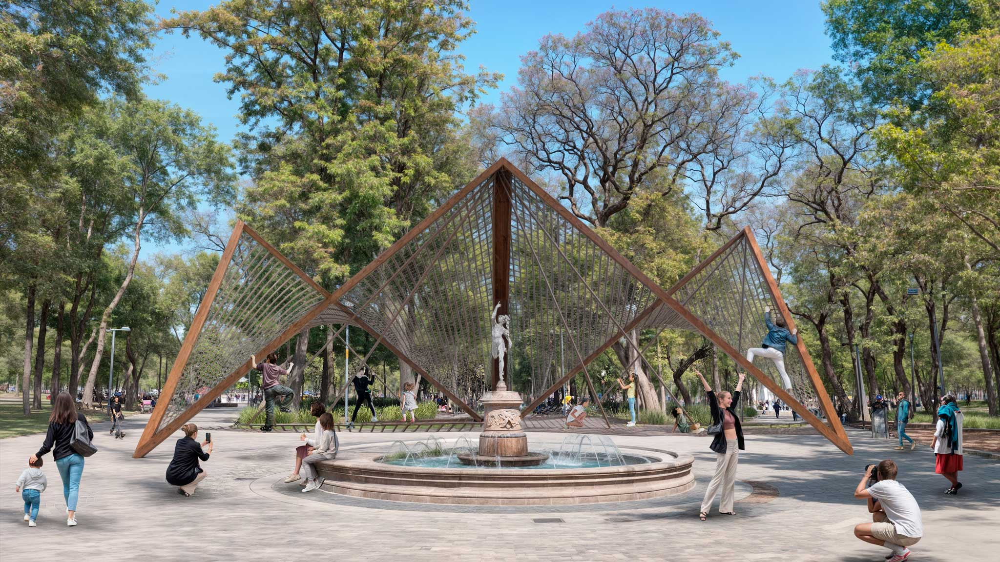
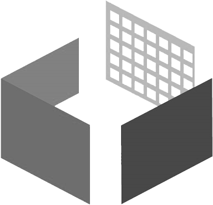
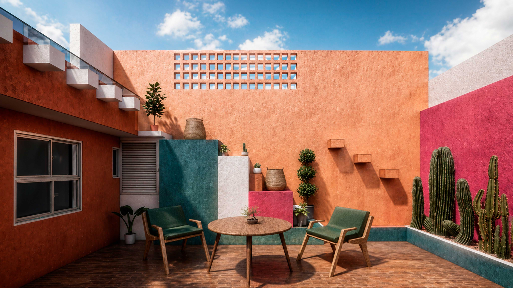

Casa Umbral


Cada proyecto es una oportunidad para innovar, crear y superar las expectativas de nuestros clientes.

Nuestro equipo convierte ideas en espacios funcionales, estéticos y sostenibles, integrando tecnología BIM en cada etapa del proceso para asegurar precisión, eficiencia y calidad.
Aquí te presentamos algunos de nuestros trabajos más recientes, que reflejan nuestro compromiso con la excelencia y la satisfacción de nuestros clientes.






Un refugio donde la arquitectura se convierte en luz, naturaleza y privacidad.
Año: 2025
Diseño y construcción: ARQUITECTURA EN PARALELO
Equipo de proyecto: Juan Carlos Muñoz Vargas, Abraham Hernández Márquez, Larissa Guzmán
Ubicación: Ciudad de México (CDMX)
En contextos urbanos cada vez más densos, las viviendas suelen enfrentar desafíos recurrentes: espacios con poca iluminación natural, escasa ventilación y una limitada conexión con la naturaleza. Casa Umbral nace como una respuesta a estas problemáticas, transformando un terreno convencional en un hogar capaz de ofrecer bienestar, amplitud y tranquilidad.

El proyecto toma su nombre del concepto de umbral: ese espacio intermedio que conecta dos realidades. En Casa Umbral, la arquitectura actúa como un puente entre el exterior y el interior, entre la ciudad y el refugio, entre la vida cotidiana y los momentos de introspección.

El corazón del proyecto es un jardín interior que articula la vida de la vivienda. Más que un elemento decorativo, este espacio verde introduce luz, ventilación y naturaleza al interior, estableciendo una conexión visual constante entre los diferentes ambientes.

La privacidad se resuelve mediante una envolvente arquitectónica que protege los espacios interiores. La celosía, inspirada en el lenguaje geométrico de Arquitectura en Paralelo, funciona como un filtro de luz y sombra que regula las visuales y aporta una expresión arquitectónica única.

Casa Umbral demuestra cómo la arquitectura puede ir más allá de la construcción de espacios para convertirse en una experiencia de habitar. Un hogar diseñado para vivir en armonía con la luz, la naturaleza y el tiempo.